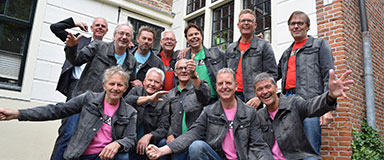

<div class="event-info">
	<div>
		<div class="img-wrap">
	
		</div>
		<div class="songs">
			<p title="Bløf">Alles is liefde</p>
			<p title="CSN&Y">Our House</p>
			<p title="Marco Borsato">Dromen Zijn Bedrog</p>
			<p title="Bjørk">It's Oh So Quiet</p>
			<p title="Avicii">Wake Me Up</p>
			<p title="Randy Newman">Short People</p>
			<p title="Rolling Stones">Ruby Tuesday</p>
			<p title="Fun">Some Nights</p>
		</div>
		<div class="content-wrap">
    <p><strong>Vocalgroup Men@Work uit Spierdijk</strong></p>
	<p>Men@Work uit Spierdijk bestaat uit 12 mannen uit diverse Westfriese dorpen die zingen als passie hebben.</p>
	<p>Het repertoire is veelzijdig, van Queen tot De Poema’s, van Elton John tot Adèle.</p>
	<p>Er wordt a-capella gezongen, sommige nummers worden ondersteund door Frank Hoebe's virtuoze pianospel.</p>
	<p>&nbsp;</p>
	<p>Dirigent: Frank Hoebe</p>
	<p>&nbsp;</p>
	<p><a href="http://www.vocalgroupmenatwork.nl" target="_blank">http://www.vocalgroupmenatwork.nl</a></p>
	<p><a href="https://www.facebook.com/vocalgroupmenatwork/" target="_blank">https://www.facebook.com/vocalgroupmenatwork/</a></p>
		</div>
	</div>
</div>
